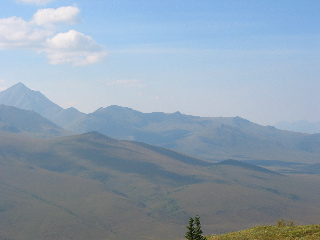
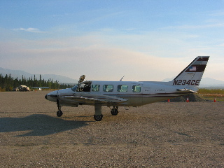
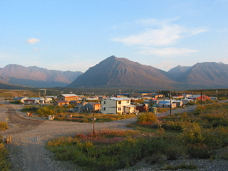

Day 7 — 2004/08/20
Today we went to hike to hike up the Midnight Dome, which is near the Nolan Gold mine. The spot part way up where we stopped for lunch had a great view, so I grabbed a panoramic here.

After supper, we went to the Coldfoot airstrip and flew through the Gates to the Arctic on our way to Anaktuvuk Pass.

Anaktuvuk is a Nunamuit village, the last nomadic eskimo tribe to settle about 50 years abo. We were given a tour of the village. For a place that had no roads, accessible only by plane, they were much more modernized than you would have at first believed. (running water and sewer, cable TV and internet.) The people there we very nice and friendly.